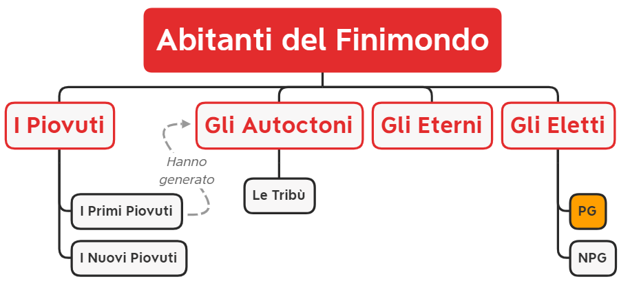

Abitanti Finemondo

I Piovuti
I Piovuti dal cielo sono coloro che *sono stati inghiottiti dalle *Voragini e quindi si ritrovano a precipitare nel finemondo. I piovuti si dividono in:
I Primi Piovuti
I Progenitori delle Tribù Autoctone provenivano da Eberron, Sigil e Forgotten Realms e riuscirono a rifondare le loro fazioni poiché mantennero i ricordi del loro mondo precedente.
Col tempo, però, iniziarono a diffondere una dottrina secondo cui i nuovi piovuti dal cielo fossero demoni malvagi, omettendo il fatto che anche loro erano giunti nel Finemondo allo stesso modo. Di conseguenza, la vera storia andò perduta e le nuove generazioni di Autoctoni si convinsero di essere originarie del Finemondo.
I Nuovi Piovuti
Con il passare degli anni e la stabilizzazione della frequenza del Finemondo, i Piovuti dal cielo faticano sempre più a ricordare le loro origini. Appena giungono nel Finemondo, un'amnesia devastante li colpisce, rendendo quasi impossibile il ricordo della crociata temporale e delle voragini.
Questa è la ragione per cui si fa una netta distinzione tra i primi Piovuti dal cielo, che hanno mantenuto intatti i loro ricordi, e i nuovi Piovuti, i cui ricordi del mondo originale sono più sfocati, se non completamente assenti.
Gli Autoctoni
Discendenti dei primi piovuti, divisi in tribù con proprie credenze e miti. Combattono tra loro, ma concordano nel considerare i nuovi Piovuti una minaccia. Le loro religioni li descrivono come demoni infernali, una falsa credenza diffusa dai loro antenati per celare la verità sull'origine del finemondo.
Gli Autoctoni si dividono in
- Nemici dei Piovuti: Sono la maggior parte delle comunità.
- Alleati dei Piovuti: Sono una piccolissima parte delle comunità, che hanno memoria del passato.
Gli Eterni
Gli Eterni, ora noti come Custodi dei Templi del Tempo Perduto, nonostante fossero gli gli attori principali del protocollo ultimo durante l'incidente le loro menti sono state sovrascritte ed ora pensano di essere entità cosmiche che da sempre sorvegliano il finemondo.
Non possono lasciare la bolla protettiva che circonda il Tempio del Tempo Perduto perchè la loro assenza causerebbe il collasso della macroarea.
La Forza Arcana comunica in qualche modo con gli Eterni, ma essi la percepiscono solo come una presenza misteriosa, senza comprenderne la vera natura.
La loro conoscenza del Finemondo è limitata a ciò che è conservato nell'archivio e a quanto i giocatori riescono a farli risincronizzare attraverso il recupero di reliquie.
Alcuni Eletti conoscono l'esistenza degli altri Tempi, mentre altri no (ad esempio, l'Eterno N1).
Gli Eletti
Perché sono stati scelti I PG?
I PG (Liv 3) non sono stati chiamati dalla forza arcana perché fossero gli eroi del loro mondo ma perché tra i mille futuri possibili la forza arcana ha visto che i PG avevano un ruolo importante da recitare nel finemondo.
Giocando i PG scopriranno la LORE del mondo e capiranno perché sono stati scelti proprio loro. Utilizzando Le Grandi Domande si riesce a inventare un valido motivo del perché sono stati richiamati nel Finemondo.
Poteri del Talismano
Permette ai PG morti in missione di essere resuscitati dalle cripte del tempo
Permette di accedere alla Base. Senza quello i PG non potranno riaccedere al tempio e andranno in contro a un triste destino.
Viene evocato e consegnato alle squadre d'esplorazione ogni volta che escono dal tempio. Se fuori dal tempio ci sono più squadre ci saranno più talismani.
Archivio delle Spedizioni Precedenti
Nel Tempio del Tempo Perduto ci sta un archivio che contiene diari di viaggio delle varie squadre giunte al Tempio prima della squadra dei PG.
Molti documenti dell'archivio sono stati rubati e altri sono stati bruciati in un grosso incendio.